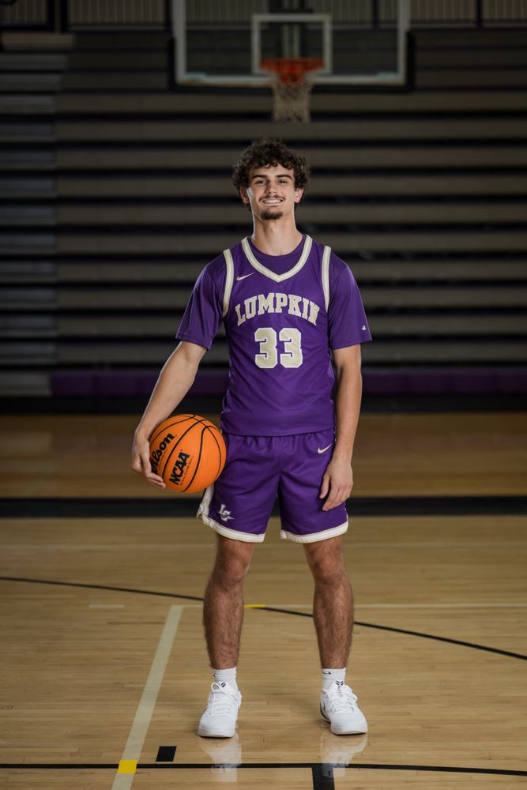

I’m from Dahlonega, Georgia, and graduated from Lumpkin County High School in 2026. Before coming to Tech, some of my favorite work happened with a computer case open or a physics project on the table. Building PCs made me curious about what happens inside the components I was installing. At Georgia Tech, I’m starting to study the circuits and programming behind the hardware I already enjoyed working with.
Basketball was the other big part of high school for me. I played varsity point guard for four years and served as captain my senior year. As a point guard, I had to pay attention to what everyone else was doing while making my own decisions. As captain, I also helped younger teammates and communicated with our coaches. Teaching at youth basketball camps gave me practice explaining a skill to someone trying it for the first time. Leading a group of fifth graders made it pretty clear when an explanation needed a demonstration.
I came into my first semester with hardware experience and very little programming experience. In CS 1301, I’ve been learning Python, including how to trace a function, keep track of values as a loop runs, and check a program one behavior at a time. Robotics has been a good fit because a working light or a change in direction gives me immediate feedback. I’m still early in my engineering education, and those are the kinds of problems that make me want to keep learning.

Varsity basketball at Lumpkin County High School.